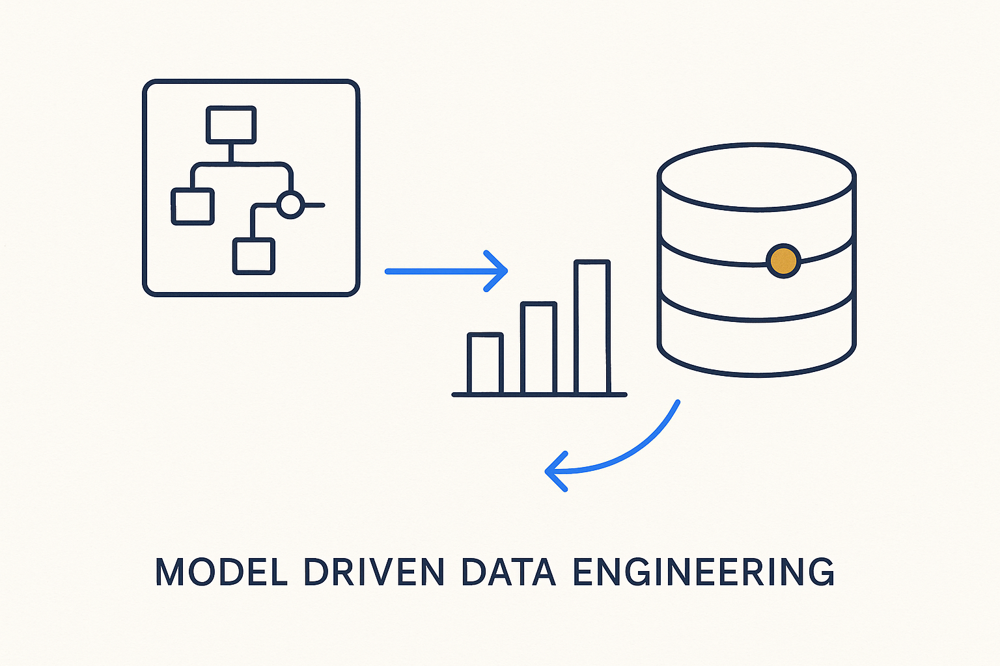

Building scalable, metadata-driven data platforms from models — not hand-written code.

> Building scalable, metadata-driven data platforms from models — not hand-written code.
The master brand, and the thesis the rest of the corpus elaborates: a data platform's structure and logic are data, not code. Entities, attributes, mappings, filters, time policies, rules — and even the generated SQL — live as rows in a metamodel, and the platform's artifacts (DDL, dbt, pipelines, tests, lineage, documentation, diagrams) are *generated views* of that metadata. Models are the source of truth; everything downstream is derived from them deterministically.
The bet is easy to state and hard to hold: you write the model, not the pipeline. A five-table demo is enough to prove the trick — SQL generated from metadata instead of typed by hand. The full metamodel is 268 tables, and the honest question is why it grows that far. The answer is not sprawl but discipline: repeating groups become tables (an identifier has member columns, in order), declaration and call are separated the way a programming language separates them (a function has declared parameters; each use binds arguments), and capabilities arrive in coherent clusters (Data Vault, fact-oriented modeling, import bridges) you can adopt or ignore. The model is large the way a city is large — districts, not sprawl — and roughly two-thirds of it is optional.
What makes the approach trustworthy is that the metadata is executable, not descriptive: it does not document what the platform does, it *is* what the platform does. Because SQL, tests, lineage and docs are all executions of the same metadata, they cannot drift out of sync — the metadata star is the image, deterministic generation is the mechanism, and the metadata operating system is the engineered whole. MDDE is not a tool; it is the way of thinking the tools implement. The framework even documents itself — its own reference, DDL and diagrams are generated from the metamodel database, because a metadata framework whose documentation is hand-maintained would be a contradiction.
Where it lives: Core throughout the MDDE corpus — the umbrella every other concept hangs under.